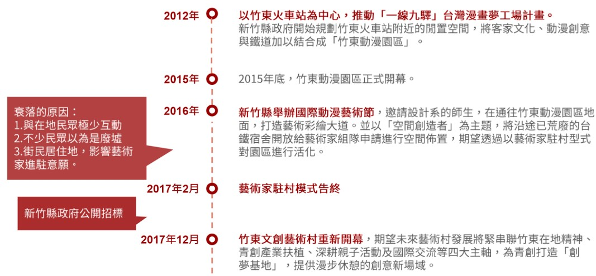
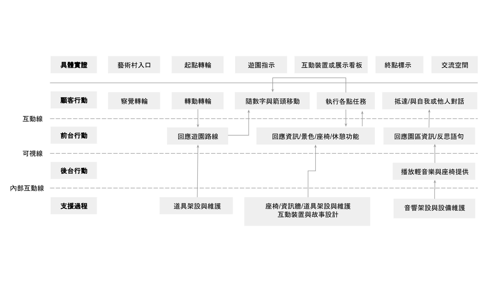

竹東走走
竹東文創藝術村遊園路線提案 English

角色: 服務設計師
簡介
「竹東走走」為一城鄉創生之服務設計專案，以新竹縣竹東鎮之竹東文創藝術村為場域進行設計，歷經服務設計的4D流程，期望連結城鄉，帶動人潮。
我們首先以場域探訪、觀察、訪談等技巧發掘(Discover)與熟悉場域內的生態系統，再以親合圖等工具定義(Define)場域問題並發展人物誌。接著腦力激盪發展(Develop)並收斂出此次遊園路線提案，最終以一支微宣傳短片與網頁傳遞(Deliver)我們的服務概念並以問卷進行初步驗證。
設計流程
發掘問題 Discover

定義問題 Develop
發展服務 Define
服務驗證 Deliver
發掘問題 Discover
源自於2012年新竹縣的「一線九驛」台灣夢工廠計畫，竹東動漫園區以及竹東文創藝術村由竹東火車站旁的閒置空地改建而成。兩站於2015年正式開幕，但卻因該地之策略規劃並未考量在地連結且營運慘淡，不久後竹東動漫園區宣告倒閉，而我們的目標場域，竹東文創藝術村則在2017年由新竹縣政府公開招標，目前委由范特喜文創公司經營。
在此階段，我們歷經三次的場域觀察、一場與場地負責人的訪談以及數個遊客與在地人的街頭訪問。我們收到的資料包含竹東在地人對藝術村的看法、竹東人對竹東的觀點、遊客對藝術村的觀點、商家對藝術村的介紹與想法等。
定義問題 Define
將資料透過親合圖的整合後，我們歸納出兩大類型的人物誌。包括(一)育有二子的竹東在地客家媽媽以及(二)熱愛打卡分享生活的在學學生。這兩類人物誌的痛點與需求包括
痛點
- 竹東在地缺乏休憩的地方
- 藝術村缺乏座椅可供休憩
需求
- 休假時能在地休憩
- 與遊伴共創快樂回憶
- 拍美照分享至社群
基於以上的痛點與需求，我們認為對於我們的目標用戶而言，對於「一個景點是有記憶點可以達到他們休憩的目的」是重要的，因此我們將設計問題定義為「我們如何讓在地人與網美能夠駐足並停留在竹東藝術村」

發展服務 Develop
我們提出了一個遊園路線的服務提案，在園區內布置許多箭頭與數字標示，引導旅客遊園，並透過故事包裝讓來者能夠更加了解竹東在地的多元特色。旅客將可以在入口處以互動裝置選擇遊園路線，而我們在路線中同時穿插各式休憩點，期望訪客能透過裝置與竹東對話、拜訪店家，發掘生活周遭的美好事物。

我們進一步規劃出一條路線以具體化我們的概念。在此路線中我們納入竹編、花布與馬告香料等元素的介紹並引導旅客進入相應店家、在休憩點布置座椅，以對話看板邀請旅客坐下休憩，最終將旅客引導至終點處的開放空間，作為旅伴間相互交流的地方，鼓勵彼此對話。我們的服務藍圖如下圖。
發展驗證 Deliver


最終服務驗證階段，我們將遊園體驗的概念製作成微短片與宣傳網站並發放問卷製臉書社團、Line群組與PTT新竹版進行驗證。發放時間為3天，總計收回98份問卷，其中居住於新竹者佔42.3%；半數年齡落在23-40歲；並有82.5%過去從未去過竹東藝術村。
分析問卷結果得知，對於未曾去過竹東藝術村的人而言，在看完宣傳網站後普遍想來訪的意願高，平均到訪意願為8.05分；但對於已去過竹東藝術村的人而言，則會認為宣傳網站與現場情況有所落差，想再次前往的意願不高，平均到訪意願為6.47分。若以總體平均論，看完「竹東走走」後到訪的意願平均有7.77分。
經過初步的驗證，整體而言，我們認為「竹東走走」的遊園概念有其吸引力並有助於無論是遊客或是在地人對於竹東當地多元特色的了解。我們亦收到許多資訊細節、資訊呈現以及網頁互動方面的回饋，成為未來服務若要落地執行的寶貴建議。